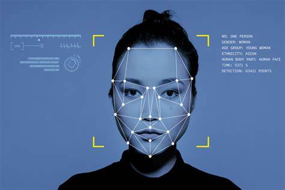

Um estudo relatou a insegurança dos brasileiros em compartilhar dados biométricos.
Por Isaac Teixeira, Life Encryption
Publicado em 15/09/2024 e atualizado às 20:18
De acordo com o estudo da CGI, cerca de 60% dos usuários de Internet com mais de 16 anos no Brasil apresentam algum nível de preocupação com o fornecimento de dados biométricos. A pesquisa é da 2ª edição do estudo “Privacidade e proteção de dados pessoais: perspectivas de indivíduos, empresas e organizações públicas no Brasil”, realizado pelo CGI.br (Comitê Gestor da Internet no Brasil).
Conforme o estudo, 32% dos 2.618 ouvidos pelo Comitê gera bastante preocupação, enquanto que para 28% gera algum tipo de incerteza. Para os usuários, o alerta é associado ao reconhecimento facial e à impressão digital. Nessas categorias, o amenazamento chegou a atingir 86% e 82%.
O levantamento também levou em consideração as instituições que os brasileiros mais têm apreensão em fornecer os dados:
O 2º tipo de fornecimento de dados sensíveis na internet que mais causa ansiedade nos brasileiros são dados médicos, prontuários e resultados de exames (51%) e dados genéticos (40%).
O estudo aponta que a maior preocupação é o vazamento de dados sensíveis com exposição de dados bancários ou informações que comprometam a saúde financeira.
O nível de preocupação mais elevado foi ao comprar pela internet por páginas e aplicativos (29% muito preocupados e 27% preocupados), seguido de acessar páginas e aplicativos de bancos (25% muito preocupados e 24% preocupados).
A pesquisa também aponta que, em 2023, 58% dos brasileiros com 16 anos ou mais que navegam na internet sempre (26%) ou quase sempre (32%) concordam com as políticas de privacidade de sites ou de aplicativos sem ler. As faixas etárias de 16 a 24 anos e 25 a 34 anos são as que mais concordam com as políticas de privacidade sem ler.